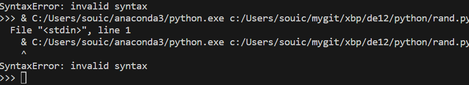

- def ant_game():
- print("アリをつぶす？ つぶさない？")
- user_choice = input("「つぶす」または「つぶさない」を入力してください：").strip().lower()
- if user_choice == "つぶす":
- print("小学校入学です！")
- elif user_choice == "つぶさない":
- print("ミジンコです！")
- else:
- print("無効な選択です。正しい選択を入力してください。")
- print("次の質問:")
- print("今日は1人休みが出た 牛乳じゃんけん参加する？しない？")
- user_choice = input("「参加する」または「参加しない」を入力してください：").strip().lower()
- if user_choice == "参加する":
- print("中学校入学！")
- elif user_choice == "参加しない":
- print("引きこもりからのニート")
- else:
- ant_game()
- print("次の質問:")
- print("たくさんある部活動。あなたは入る？入らない？")
- user_choice = input("「入る」または「入らない」を入力してください： ").strip().lower()
- if user_choice == "入る":
- print("高校入学です！")
- elif user_choice == "入らない":
- print("ミジンコです！")
- print("ゲームオーバー！ミジンコになりました。")
- return # ゲーム終了
- else:
-
-
- print("次の質問:")
- print("新しくなった制服。あなたは着崩す？着崩さない？")
- user_choice = input("「着崩す」または「着崩さない」を入力してください： ").strip().lower()
- if user_choice == "着崩さない":
- print("大学入学！")
- elif user_choice == "着崩す":
- print("ガラの悪い人とつるむようになり、逮捕！")
- print("ゲームオーバー！ニートになりました。")
- return # ゲーム終了
- else:
- print("無効な選択です。正しい選択を入力してください。")
- return # ゲーム終了
- print("次の質問:")
- print("友達から誘われたサークルが飲みサーだった。あなたは入る？入らない？")
- user_choice = input("「入る」または「入らない」を入力してください： ").strip().lower()
- if user_choice == "入らない":
- print("無事に大学4年生!")
- elif user_choice == "入る":
- print("飲酒を原因に問題を起こしてしまい、大学退学! ニート！")
- print("ゲームオーバー！ニートになりました。")
- return # ゲーム終了
- else:
- print("無効な選択です。正しい選択を入力してください。")
- return # ゲーム終了
- print("次の質問:")
- print("卒業後の進路。どうする?")
- user_choice = input("「旅に出る」または「一般企業に就職する」を入力してください： ").strip().lower()
- if user_choice == "旅に出る":
- print("大きな決断をした!")
- elif user_choice == "一般企業に就職する":
- print("就職先を見つけた。なんとか生活していけそうだ。")
- print("ゲーム終了！ブラック企業じゃないといいね！")
- return # ゲーム終了
- else:
- print("無効な選択です。正しい選択を入力してください。")
- return # ゲーム終了
- print("次の質問:")
- print("旅はどこに出よう?")
- user_choice = input("「国内」または「海外」を入力してください： ").strip().lower()
- if user_choice == "海外":
- print("どこにいこうか？")
- elif user_choice == "国内":
- print("日本を旅する中であなたは地方の大切さに気づき、地方創生を意識するようになった。")
- print("ゲーム終了！あなたは地方でのんびり生活することにした。")
- return # ゲーム終了
- else:
- print("無効な選択です。正しい選択を入力してください。")
- return # ゲーム終了
- print("次の質問:")
- print("旅はどこに出よう?")
- user_choice = input("「アメリカ」または「インド」を入力してください： ").strip().lower()
- if user_choice == "インド":
- print("何をしようか？")
- elif user_choice == "イギリス":
- print("あなたは、イギリスを深い文化を学んだ。")
- print("ゲーム終了！イギリスでの経験を生かし、外資系企業に就職した。")
- return # ゲーム終了
- else:
- print("無効な選択です。正しい選択を入力してください。")
- return # ゲーム終了
- print("次の質問:")
- print("インドで何をしよう?")
- user_choice = input("「木の下で横になる」または「象に乗る」を入力してください： ").strip().lower()
- if user_choice == "木の下で横になる":
- print("ゲーム勝利！あなたは悟りを開き、仏になった！")
- return # ゲーム終了
- elif user_choice == "象に乗る":
- print("インドを満喫した！")
- print("ゲーム終了！あなたは東南アジアに目を向けるようになった。")
- return # ゲーム終了
- else:
- print("無効な選択です。正しい選択を入力してください。")
- return # ゲーム終了
- if __name__ == "__main__":
- ant_game()
